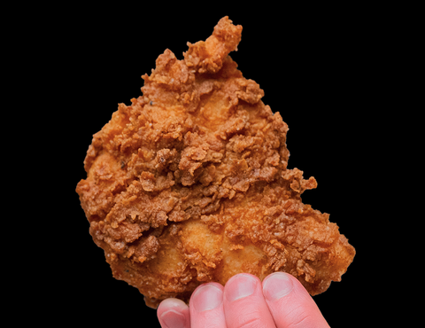

ULTIMATE CRISPY FRIED CHICKEN

Crispy fried chicken has several defining characteristics that make it so satisfying. Here are the key ones:
Texture
- Crispy, crunchy crust: The outer layer should make an audible crunch when bitten into. This comes from proper dredging (flour, cornstarch, or batter) and frying at the right temperature.
- Juicy interior: While the outside is crisp, the meat—especially chicken thighs and drumsticks—should remain moist and tender.
Appearance
- Golden brown color: Perfectly fried chicken has a rich golden to deep amber tone, signaling both crispness and proper frying.
- Craggy surface: A rough, uneven coating (not smooth) traps more air and oil during frying, making it extra crunchy.
Flavor
- Well-seasoned coating: Salt, pepper, garlic, paprika, cayenne, and other spices in the flour or batter contribute to a flavorful crust.
- Balanced seasoning inside: The chicken itself should be seasoned or brined so flavor goes beyond just the crust.
Aroma
- Savory and slightly nutty: Fried chicken should smell of seasoned crust and cooked fat (often from buttermilk or oil), without any burnt or greasy scent.
Mouthfeel
- Light, not greasy: Properly fried chicken isn’t oily; excess oil drains off, leaving a crisp, clean bite.
- Contrast between crust and meat: The crunch gives way to tender, juicy chicken for a satisfying texture contrast.
INGREDIENTS